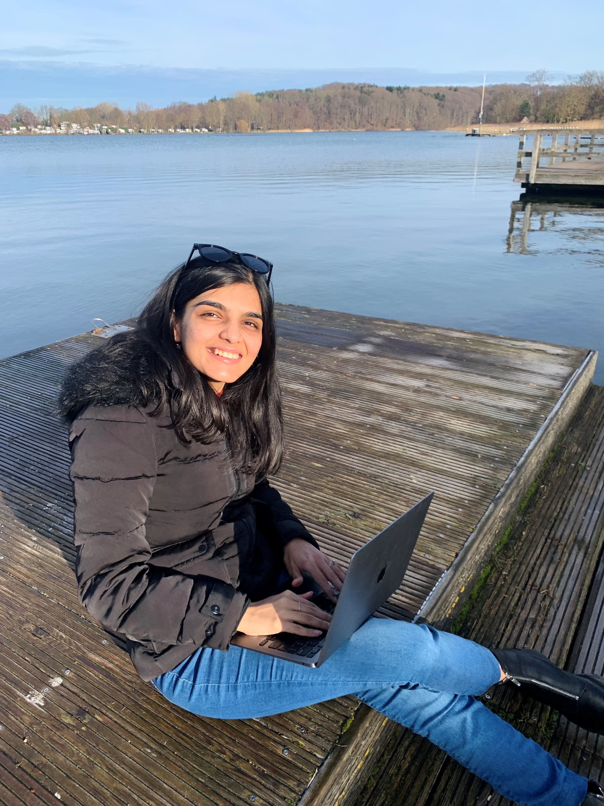

About Me
Engineer by profession.
Curious human by nature.

Growing up in India, I have always been fascinated by problem solving and understanding how things worked. That curiosity eventually became a career in technology, where I've spent more than 10 years at companies like BlackRock and Accenture helping organizations solve complex IT operational and reliability challenges.
In 2021, I moved to Germany to continue that journey. Living and working in a new country taught me things I did not even realise I needed to know. It strengthened my resilience, broadened my perspective and inspired me to create spaces where people feel supported as they build their careers—just like I would want one. Hence I founded a Women in Technology community in Hamburg which has about 900+ members as of today.
Over the years, I've realised that my interests extend far beyond technology. I enjoy simplifying complexity—whether I'm designing an Observability strategy, facilitating an SRE workshop, speaking on stage about my learnings, mentoring someone through a career decision, writing about personal growth or organising events that bring people together.
When I am not working, you'll usually find me planning my next trip, training for my next marathon, somewhere by the water with a book or catching the sunset :)